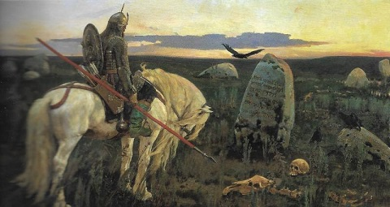
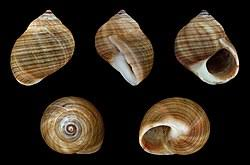
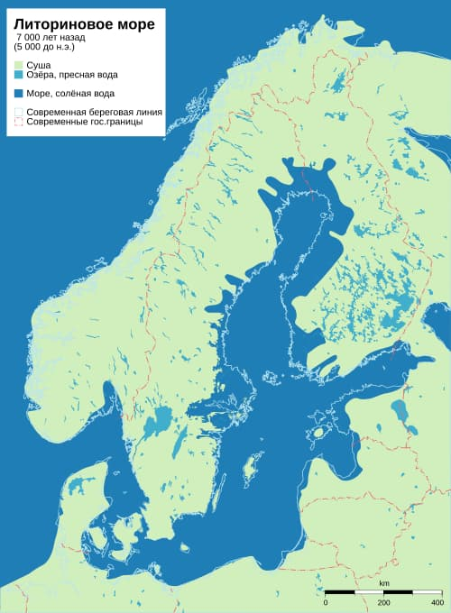

Исторический район, впоследствии названный Ингрия, стал доступен для обитания человека после отступления скандинаво-финляндского ледника примерно 11-12 тысячелетий назад.
Если верить ученым, проводившим раскопки на Охтинском мысу, человек начал осваивать эту местность примерно 6 тысяч лет назад, когда мыс был островом, судя по всему. Если так, здесь, на Ижорской возвышенности, территория не могла быть освоена позже. На том простом основании, что она выше и суше. Косвенное тому подтверждение — наличие многочисленных курганов-могильников, которые кроме как здесь, на просторах Ленобласти не встречаются. За исключением южных районов как Лужский, Псковская и Новгородская области.
Невозможно сказать, какие народы заняли территорию первыми. Когда пришли славяне в 8-13 веках, на ней обитали финно-угорские племена. Завоевания или конфликта между народами не было, вероятно. Либо финно-угры отступали на север, либо оставались где и были, места достаточно. Совсем недавно, после войны, в непосредственном контакте существовали русские, финские деревни, эстонские хутора, со своими языками. Это не мешало общаться, жить в мире, уважать, любить друг друга и не знать, что это за мерзость "ксенофобия".
Всегда было любопытно, как случилось, что река Ижора, Усть-Ижора, Ям-Ижора, Большая Ижора и Ижорская возвышенность разбросаны по региону как попало, не имея привязки к географическому пятну. Расстояния между ними до сотни километров.
Объяснение такое: - привязка не к точке, а к географической системе, объединенной именем освоившего её народа - Ижора. Иначе говоря - это Ижорская земля, в переносе на финно-угорские языки - Ингерманландия. То есть, местность принимает название доминирующего этноса.
Возможно, это верно, но странно. Впрочем, похожим принципом объединились соседние Латвия (латы), Эстония (эсты), Курляндия (курши или куры), Померания (поморяне).
На сегодня Ижорского народа осталось не более пятисот человек. Растворились в славянской культуре.
С принятием христианства многие финны стали православными. Повсеместно сохранились финские топонимы в названиях рек, с окончанием на -га, -ма, -ва, -ра, -ша, -жа: Луга, Лемовжа, Ухора, Нейма, Пустомержа. В Эстонии и около Ладоги обитали племена Чудь (они же Водь, похоже), в Карелии Емь. Неслучайно, одна пятая часть Новгородской земли, о которой речь, именовалась Водской пятиной. Славянские племена, тут обосновавшиеся, носили обобщительное название Словене.
Территория в те времена была полностью занята великим лесом "от океана до океана". Сухопутных коммуникаций не было, только по рекам летом, по речному льду зимой. Потому славяне селились у речных берегов. Тут была вода в достатке, а главное — Великий речной путь из Балтийского моря до главного города того времени Царьграда. На оживленной торговой магистрали можно было прилично жить. Многочисленные торговые погосты (от слова гость) обносились сначала частоколами, потом более серьезными укреплениями. Таким образом формировались города. Их было такое множество, что скандинавские варяги называли водный путь - Гардарики (страна городов).
Естественным образом, морской путь не оставили своим вниманием те самые варяги. Что им, великим мореплавателям, разбойникам и воинам, было одолеть мелководный ласковый Балтийский бассейн, чтобы овладеть "золотой артерией" тогдашнего Мира?! И не обязательно грабить, хоть и это тоже. Нанимались сопровождать торговые караваны, охранять города, торговать. Всякие были интересы. Варяжских племен тоже было много. Одно из них, Русь, дало название нашему будущему государству. Откуда взялся Рюрик, наш первый легендарный князь, кем был, приглашался ли и был ли вообще - вопрос мутный. Удобней считать, что был. Иначе, не от чего оттолкнуться. Но факт, что первая знать новорожденного государства была варяжской и довольно многочисленной. Позднее славянский этнос ассимилировал в себя скандинавский и Хельга превратились в Ольгу, Ингвар в Игоря, Ингельгарда в Ирину, а конунг в князя.
Так или иначе, страна, в которой мы живем, которая раскинулась от Балтики до Тихого океана, от Ледового океана до Ближнего Востока, как государство родилась здесь. Не в Волосовском районе, конечно, а на Новгородской Земле, к пятой части которой он принадлежал.
В районе повсеместно встречаются под ногами некие ракушки. Есть мнение, они здесь жили задолго до нас, во времена Литоринового моря (8500-4000 лет назад). Это море покрывало основную часть суши региона и стало следствием таяния ледника. Свое название получило от того молюска.

